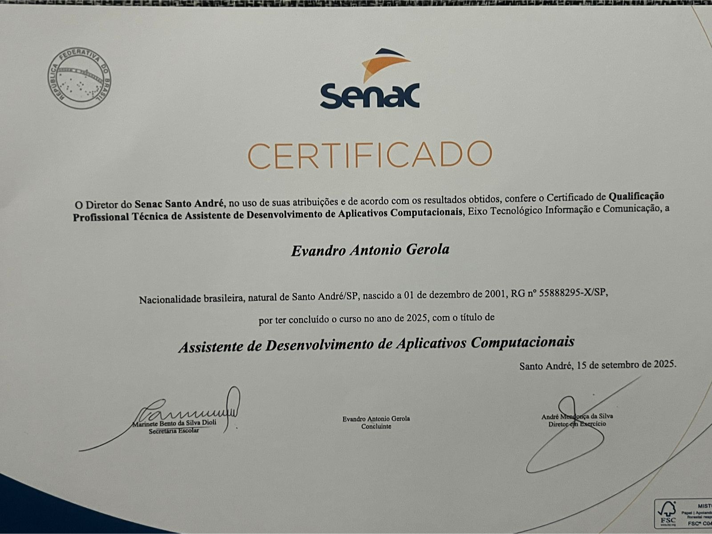
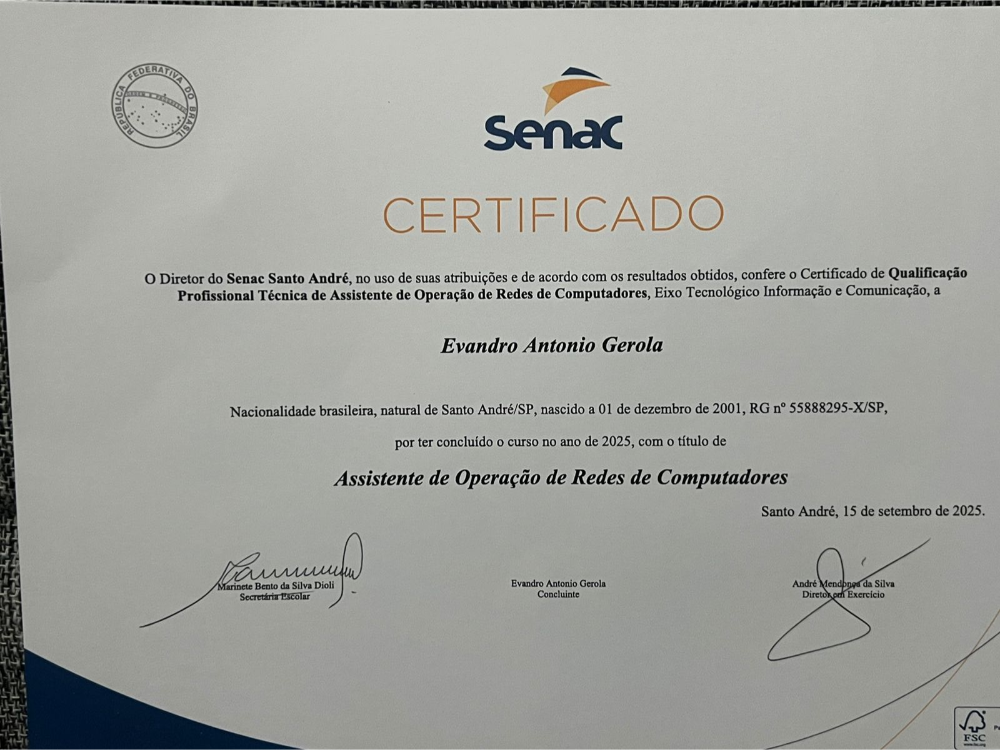

Minha Formação
Graduação - Tecnologia a Banco de Dados - UNINTER
2025 - Em andamentoFormação voltada à modelagem, desenvolvimento e administração de bancos de dados.
Tecnico em Informatica - SENAC
2023-2025 - ConcluidoFormação voltada à instalação, manutenção e configuração de hardware e software. Abrange montagem de computadores, diagnóstico de falhas, redes básicas e sistemas operacionais. Foco em suporte técnico, otimização de desempenho e garantia do funcionamento adequado dos equipamentos.
Power BI Para Business Intelligence e Data Science
2025 - 72h - ConcluidoFormação voltada à análise e visualização de dados para suporte estratégico à tomada de decisão. Abrange tratamento de dados, modelagem, criação de dashboards interativos e uso de DAX. Foco em transformar dados em informações relevantes para Business Intelligence e projetos de Data Science.
Desenvolvimento de Aplicativos - SENAC
2025 - 560h - ConcluidoAtuação no apoio ao desenvolvimento de aplicativos desktop e web, com conhecimentos em lógica de programação, estruturas de dados e linguagens como Python, MSQL, HTML, CSS, JAVA SCRIPT

Assistente de Operação de Redes de Computadores - SENAC
2025 - 260h - ConcluidoAtuação no suporte à configuração, monitoramento e manutenção de redes de computadores, garantindo a conectividade e o bom funcionamento dos sistemas. Experiência em instalação e gerenciamento de equipamentos de rede (switches, roteadores, pontos de acesso).

Excel do Basico ao Avançado
2024 - 50h - ConcluidoCapacitação voltada ao uso completo do Excel para organização, análise e controle de dados. Abrange fórmulas, funções, tabelas dinâmicas, gráficos, dashboards e automação com recursos avançados.